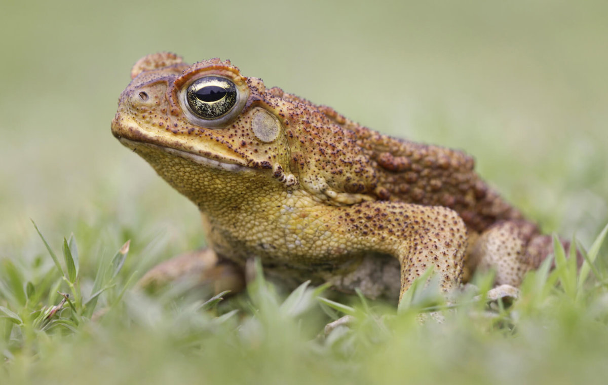

This is a css solution
difficult to export in a usable format

This is a js solution
Currently not exactly the same as the CSS method due to some library issues
difficult to export in a usable format
Currently not exactly the same as the CSS method due to some library issues